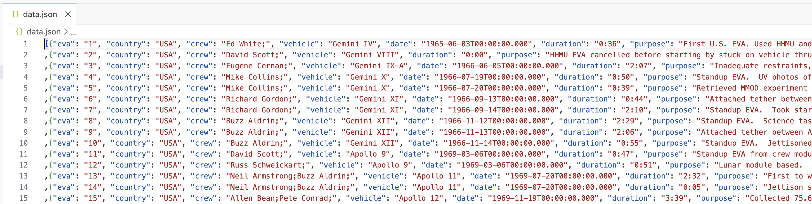
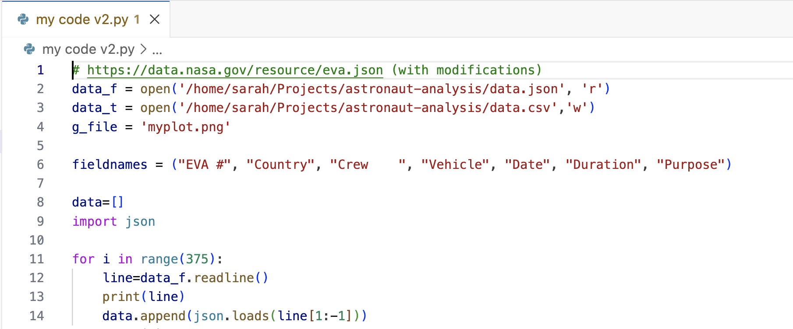

Why are these practices important, in particular in the context of
software used to support such research?
Objectives
Describe the principles of open and reproducible research and why
they are of value in the research community
Explain how the concept of reproducibility translates into practices
for building better research software
Setup machine with software and data used to teach this course
Software is fundamental
to modern research - some of it would even be impossible without
software. From short, thrown-together temporary scripts written to help
with day-to-day research tasks, through an abundance of complex data
analysis spreadsheets, to the hundreds of software engineers and
millions of lines of code behind international efforts such as the Large
Hadron Collider, there are few areas of research where software does not
have a fundamental role.
This course teaches good practices and reproducible working methods
that are agnostic of a programming language (although we will use Python
code in our examples). It aims to provide researchers with the tools and
knowledge to feel confident when writing good quality and
sustainable software to support their research. Although the
discussion will often focus on software developed in the context of
research, most of the good practices introduced here are beneficial to
software development more generally.
The lesson is particularly focused on one aspect of good (scientific)
software development practice: improving software to enhance
reproducibility. That is, enabling others to run our code and obtain the
same results we did.
Callout
Why should I care about reproducibility?
Scientific transparency and rigor are key factors in research.
Scientific methodology and results need to be published openly and
replicated and confirmed by several independent parties. However,
research papers often lack the full details required for independent
reproduction or replication. Many attempts at reproducing or replicating
the results of scientific studies have failed in a variety of
disciplines ranging from psychology (The Open
Science Collaboration (2015)) to cancer sciences (Errington et al
(2021)). These are called the
reproducibility and replicability crises - ongoing
methodological crises in which the results of many scientific studies
are difficult or impossible to repeat.
Reproducible research is a practice that ensures that researchers can
repeat the same analysis multiple times with the same results. It offers
many benefits to those who practice it:
Reproducible research helps researchers remember how and why they
performed specific tasks and analyses; this enables easier explanation
of work to collaborators and reviewers.
Reproducible research enables researchers to quickly modify analyses
and figures - this is often required at all stages of research and
automating this process saves loads of time.
Reproducible research enables reusability of previously conducted
tasks so that new projects that require the same or similar tasks become
much easier and efficient by reusing or reconfiguring previous
work.
Reproducible research supports researchers’ career development by
facilitating the reuse and citation of all research outputs - including
both code and data.
Reproducible research is a strong indicator of rigor,
trustworthiness, and transparency in scientific research. This can
increase the quality and speed of peer review, because reviewers can
directly access the analytical process described in a manuscript. It
increases the probability that errors are caught early on - by
collaborators or during the peer-review process, helping alleviate the
reproducibility crisis.
However, reproducible research often requires that researchers
implement new practices and learn new tools. This course aims to teach
some of these practices and tools pertaining to the use of software to
conduct reproducible research.
The practices we will cover for building better research software
fall into three areas.
1. Things you can do with your own computing environment to enhance
the software
Using virtual development environments ensures your software can be
developed and run consistently across different systems, making it
easier for you and others to run, reuse, and extend your code.
2. Things you can do to improve the source code of the software
itself
Organising and structuring your code and project directory keeps
your software clean, modular, and reusable, enhancing its readability,
extensibility, and reusability.
Following coding conventions for your programming language produces
consistently formatted code that others find it easy to read, reuse or
extend in their own examples and applications.
Writing structured documentation strings and comments within your
code will make it more understandable to others who wish to use or
extend it.
Testing can save time spent on debugging and ensures that your code
is correct and does what it is set out to do, giving you and others
confidence in your code and the results it produces.
3. Things you can do to make the software easier for other people to
use
Using version control and collaboration platforms like GitHub, GitLab, and CodeBerg makes it easier to share code
and work on it together.
Fostering a community around your software and promoting
collaboration helps to grow a user base for your software and
contributes to its long-term sustainability.
Providing clear and comprehensive documentation, including code
comments, API specifications, setup guides, and usage instructions,
ensures your software is easy to understand, use, and extend (by you and
others).
Accompanying your software with clear information about its
licensing terms and how it should be cited ensures that others can reuse
and adapt your code with confidence and that you receive credit when
they do so.
Discussion
Tools and practices you use (5 min)
Individually,
reflect on what practices or tools you are already using in your
software development workflow,
list some new practices or tools that you would like to start
employing or using.
Write your reflections in the shared collaborative document.
Callout
FAIR software
Some of the practices covered here also align with the FAIR Research
Software Principles and are explored further in the additional episode on FAIR software.
However, FAIR is just one of several frameworks that can guide the
development of high-quality research software. What matters most is
recognising how each of these individual practices—whether or not they
come from FAIR—helps you produce software that is more reliable,
maintainable, and useful to others.
Our research software project
You are going to follow a fairly typical experience of a new
researcher (e.g. a PhD student or a postdoc) joining a research group.
You were emailed some spacewalks data and analysis code bundled in the
spacewalks.zip archive, written by another group member who
worked on similar things but has since left. You need to be able to
install and run this code on your machine, check you can understand it
and then adapt it to your own project.
As part of the setup for this
course, you may have downloaded or been emailed the
spacewalks.zip archive. If not, you can download
it now. Save the spacewalks.zip archive to your home
directory and extract it - you should get a directory called
spacewalks.
Opening the project
We will use VS Code IDE (Integrated Development Environment) for
software development.
IDEs are graphical application that provide a comprehensive workspace
for writing, editing, testing, and debugging code - all in one place. At
the core of an IDE is a code editor, and it combines several tools that
developers need into a single interface to streamline the code
development process. IDEs are extremely useful and modern software
development would be very hard without them. Some of IDEs also provide
graphical interface to a version control system which typically contains
a subset of all available version control commands.
VS Code integrates many of these tools and functionalities (e.g. file
and project exploring, running code in terminal, viewing different file
types, running a testing framework or a debugger, version control
system, etc.) either natively or via a large number of extensions. It is
a popular choice among many researchers, but it is not the only one.
Outside of this course, you will make a choice which IDE or code editor
to use based on your and your team’s preferences.
As part of setup, we have installed a few extensions for VS Code to
make our software development experience easier.
Callout
Orient the users and navigate around VS Code.
Explorer - the top one is a file navigator, or explorer - we can use
this to open existing folders containing program files.
Search - the next one down is a search capability, so you can search
for things (and replace them with other text) over your code files.
Source control - this gives you access to source code control, which
includes Git version control functionality. This feature means you can
do things like clone Git repositories (for example, from GitHub), add
and commit files to a repository, things like that.
Run and Debug - this allows you to run programs you write in a
special way with a debugger, which allows you to check the state of your
program as it is running, which is very useful and we’ll look into
later.
Extensions - this allows you to install extensions to VS Code to
extend its functionality in some way.
Check that learners have installed Microsoft Python extension
for Visual Studio Code. This extension provides support for
Python language and will also automatically install Microsoft Pylance
(IntelliSense, performant Python language support) and Microsoft Python
Debugger extensions.
Inspecting the project
To open our directory spacewalks in VS Code – go to
File -> Open Folder and find
spacewalks.
The first thing you may want to do is inspect the content of the code
and data you received to learn more about what it does.
You may notice that the software project contains:
A JSON file called data.json - a snippet of which is
shown below - with data on extra-vehicular activities (EVAs,
i.e. spacewalks) undertaken by astronauts and cosmonauts from 1965 to
2013 (data provided by NASA via its Open
Data Portal).

JSON data file snippet showing EVA/spacewalk
data including EVA ID, country, crew members, vehicle type, date of the
spacewalk, duration, and purpose
A Python script called my code v2.py containing some
analysis code.

The first few lines of a Python script
The code in the Python script does some common research
tasks:
Reads in the data from the JSON file
Changes the data from one data format to another and saves to a file
in the new format (CSV)
Performs some calculations to generate summary statistics about the
data
Makes a plot to visualise the data
A folder called astronaut-data-analysis-old - which
presumably contains previous versions of the analysis acting as some
sort of a backup.
A hidden file .DS_Store - Desktop Services Store is a
hidden metadata file automatically created by macOS Finder in every
folder, storing user-specific view settings like icon positions, window
size, and background colors, acting much like Windows’
desktop.ini. This makes us think that the author was using
macOS operating system but this file does not make part of the project
itself.
If you do not see hidden file .DS_Store, that means that
your VS Code is configured to exclude certain files and directories from
the File Explorer View. One way to modify this is going to ‘Code’ >
‘Preferences’ > ‘Settings’ (‘Code’ > ‘Preferences’ > ‘Settings’
on macOS) and searching for ‘exclude’ and you will find the default
exclude list under Files: exclude. You can remove the
**/.DS_Store pattern and the hidden file
.DS_Store should appear in VS Code’s File Explorer.
Alternatively, open a terminal window within VS Code, navigate to
your spacewalks folder (we are assuming you downloaded it
into your home directory) and issue ls -la command to list
the directory contents.
Individually inspect the code and data. Try and see if you can
understand what the code is doing and how it is organised.
In the shared document, write down anything that you think is not
“quite right”, not clear, is missing, or could be done better.
Below are some suggested questions to help you assess the code. These
are not the only criteria on which you could evaluate the code and you
may find other aspects to comment on.
If these files were emailed to you, or sent on a chat platform, or
handed to you on a memory stick, how easy would it be to find them again
in 6 months, or 3 years?
Can you understand the code? Does it make sense to you?
Could you run the code on your platform/operating system (is there
documentation that covers installation instructions)? What programs or
libraries do you need to install to make it work (and which versions)?
Are these commonly used tools in your field?
Are you allowed to reuse this code in your own work? If you did,
would the owner expect credit in some form (paper authorship, citation
or acknowledgement)? Are you allowed to modify the files or share them
with others?
Is the code written in a way that allows you to easily modify or
extend it? How easy would it be to change its parameters to calculate a
different statistic, or run the analysis on a different input file?
What the code does:
reads data in JSON format line by line and manually parses data from
each line
appends the parsed data to a list
exports the list with data to a CSV file
reads all spacewalks durations and adds a cumulative sum for all
spacewalk durations up to that point in time
plots the cumulative durations on a graph where x-axes are dates of
spacewalks, and y-axis is the cumulative time spent in space up till
then
This is a (non-exhaustive) list of things that could be
fixed/improved with our code and data:
File and variable naming
data (data.json) and Python script
(my code v2.py) files could have more descriptive
names
Python script (my code v2.py) should not contain blank
spaces as it may cause problems when running the code from command
line
variables (e.g. w, t, tt,
ttt) should have more descriptive and meaningful names
version control is embedded in the file name
(my code v2.py) - there are better ways of keeping track of
changes to code and its different versions
the project contains a hidden file .DS_Store which is
local and personal config file that should not be shared and does not
even make sense other than on macOS
Code organisation and style
import statements should be grouped at the top
commenting and uncommenting code should not be used to direct the
flow of execution / type of analysis being done
the code lacks comments, documentation and explanations
code structure could be improved to be more modular and not one
monolithic piece of code - e.g. use functions for reusable units of
functionality
unused variables (e.g. fieldnames meant to be used when
saving data to CSV file) are polluting the code and confusing the person
reading the code
spaces should not be used in column names as it can lead to error
when reading the data in
Code content and correctness
fixing the loop to 375 data entries is not reusable on other data
files and would likely break if the data file changed
reading the JSON file line by line and extracting the data portions
from each line (by removing “,”, “[”, ”]” characters that form part of
JSON syntax) is fragile and will break if JSON file is to be
reformatted
running the code twice causes the program to fail as the result file
from the previous run will exist (which the code does not check for) and
the script will refuse to overwrite it
the code does not specify the encoding when reading the data in, and
we are also not sure what encoding the data was saved in originally
how can we be confident the data analysis and plot that is produced
as a result are correct?
Documentation
there is no README documentation to orient the user
there is no licence information to say how the code can be reused
(which then means it cannot be reused at all)
it is not clear what software dependencies the code has
there are no installation instructions or instructions on how to run
the code
As you have seen from the previous exercise - there are quite a few
things that can be improved with this code. We will try to make this
research software project a “bit better” for future use.
Running the code
Let’s try to run the code and see if we can reproduce the
results.
Open the terminal in VS Code (unless you have already done it) and
type the following command.
BASH
$ python3 my\ code\ v2.py
You will get an error that looks something like the following:
OUTPUT
Traceback (most recent call last):
File "/Users/USERNAME/Downloads/spacewalks/my code v2.py", line 2, in <module>
data_f = open('/home/sarah/Projects/astronaut-analysis/data.json', 'r')
FileNotFoundError: [Errno 2] No such file or directory: '/home/sarah/Projects/astronaut-analysis/data.json'
We get this error because the paths to the data files have been hard
coded as absolute paths for the original developer’s machine.
Hard-coding paths is not very reproducible, as it means the paths need
to be changed whenever the code is run on a new computer. We will soon
fix the code to use the relative paths within the project structure and
eventually we will change the code to take in arguments from the command
line when it is run too.
So, we cannot even run the code on our machines. There is also a
number of issues we identified with the software project that could do
with improving. For the rest of this course, we will work on fixing
these issues and applying some good software engineering practices.
Further reading
We recommend the following resources for some additional reading on
reproducible research: